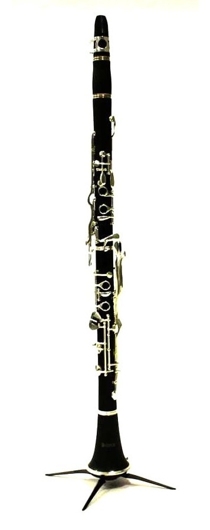

| Anasayfaya dön | Klarnetin parçaları | Klarnet çeşitleri | Türk müziğinde klarnetin öncüleri |
Klarnet Nedir?Klarnet (klarinet ya da gırnata), sert ve dayanıklı ağaçlardan genellikle de abanoz ağacından yapılan üflemeli bir çalgı türüdür. Bir çeşit sert kauçuk olan ebonitten, ayrıca metalden yapılanları da vardır. Klarinetin gövdesi silindir biçimindedir. Kalak bölümü ise obuanın kalağına oranla daha geniştir. Dikkatlice yontulup biçimlendirilen bu kamış parçası, ağızlık üzerine takılır. Çalıcının nefesi ile titreşime geçirilen kamış, boru içindeki havayı titreşime geçirerek ses elde edilmesini sağlar. Çalıcının sol eli yukarıda, sağ eli ise aşağıda olmak üzere az bir eğimle yere doğru tutulur. Flüt ve obuada olduğu gibi, klarnetin gövdesinde de ses deliklerini açmaya ve kapatmaya yarayan metal bir mekanizma vardır. 1840 sıralarında "Boehm sistemi" flüte uygulandıktan sonra, Paris konservatuvarı öğretim üyesi ve klarnetçi Klosé, bu sistemin klarnete de uygun olduğunu görmüş ve Boehm sistemi klarnete uygulanmıştır. Daha sonra farklı zamanlarda farklı kişiler tarafından bu sistem geliştirilmiştir. | |||

Klarnetin TarihçesiKlarnet tarihi 19. yüzyılda Chalumeau (Şalümo) adıyla orkestralarda icra edilen bu nefesli saz klarnetin atasıydı. Fransızcadan gelen bu isim nefesli sazların genel adıydı. Aynı yüzyılda Denner adlı çalgı yapım ustası Şalümo’yu geliştirerek bugünkü sisteme doğru ilk adımı atmıştır. 18. yüzyılda keşfedilen enstrümanın orkestraya dâhil edilmesi 1750 yılında olmuştur. 1800’lü yıllarda klarnetin oda orkestralarında yaygınlaşmasında Mozart’ın rolünün büyük olduğu bilinmektedir. 1812’de Paris Konservatuvarı’nda öğretim üyesi olan Ivan Müler klarnete farklı mekanikler ekledi. Müller’in 13 tuşlu hale getirdiği enstrüman Denner’in sistemine göre daha karmaşıktı. 1840 yılında ses sistemleri için metal tuş mekanizması flüt ve obua’da olduğu gibi klarnette de kullanılmıştır. Paris Konservatuvarı Klarnet bölümü öğretim üyesi Klose Boehm Sistemini klarnete uyguladıktan sonra 1860 yılına kadar enstrüman üzerinde mekanik gelişmeler devam etti. 1900- 1925 yılları arasında klarnet artık radyo ve stüdyo kayıtlarında önemli yer tutmaya başladı. Perde sistemlerinin esas amacı akustiğin daha kaliteli elde edilmesi yönünde idi. Şalümo ile 1600’lerde 1,5 oktav ses genişliğiyle yola çıkan klarnet Mozart’ın konçerto ve Quintetlerinde yumuşak ve koyu sesiyle klasik, caz ve pop orkestralarının vazgeçilmez nefesli sazı olarak bugün konservatuvarlarda eğitim metotlarında ve müzik literatüründe yerini almıştır. | |||
| Anasayfaya dön | Klarnetin parçaları | Klarnet çeşitleri | Türk müziğinde klarnetin öncüleri |